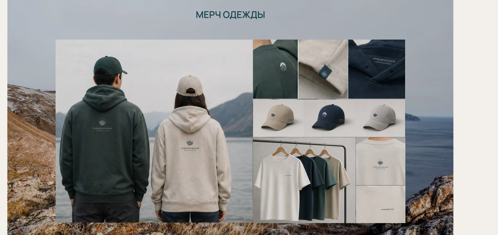
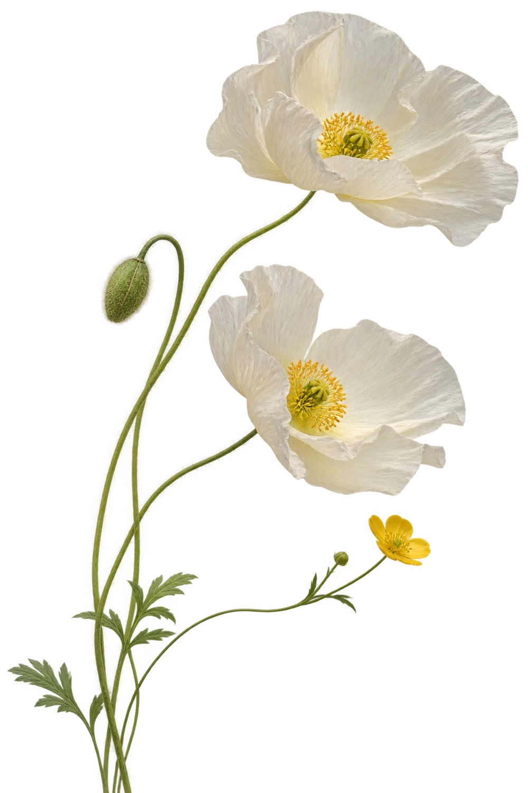
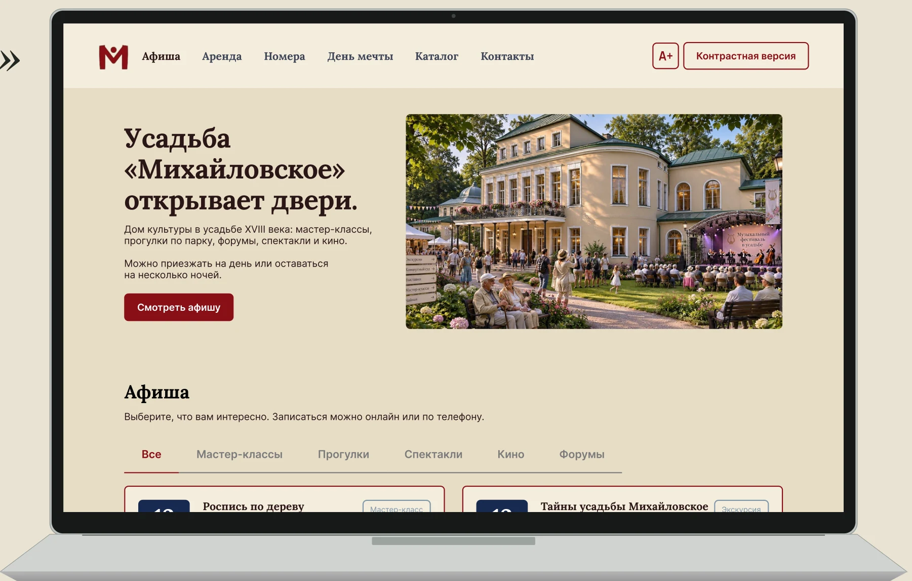
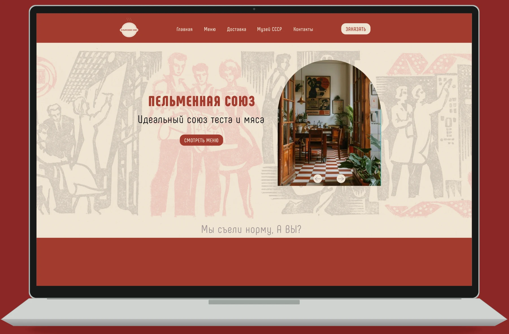
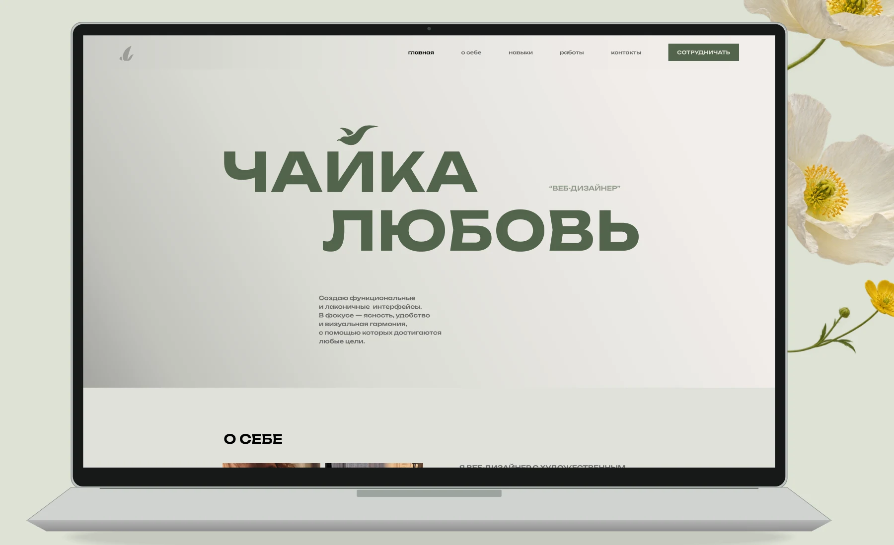
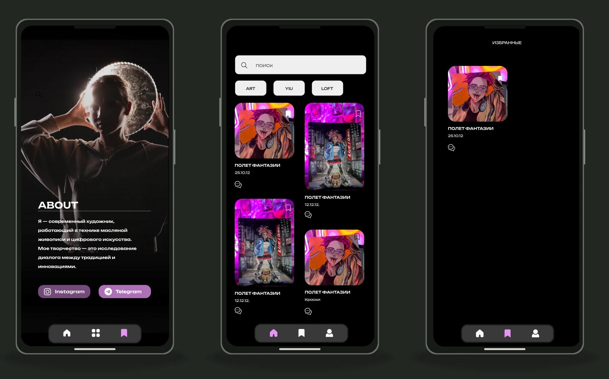
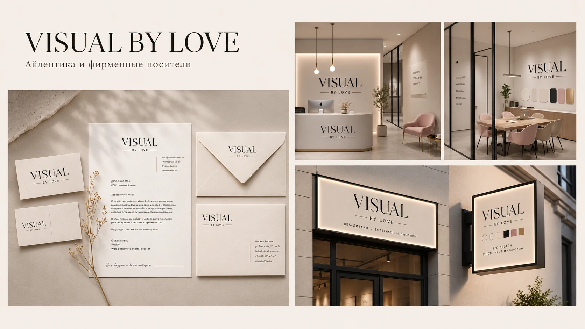
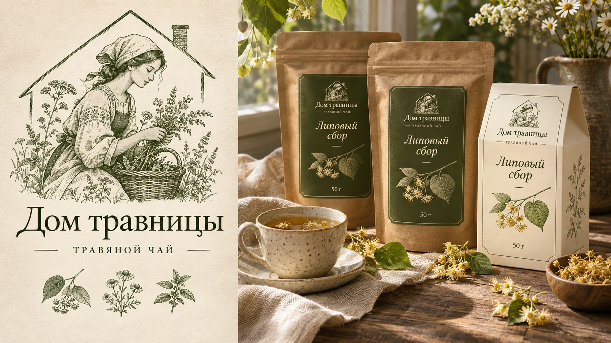
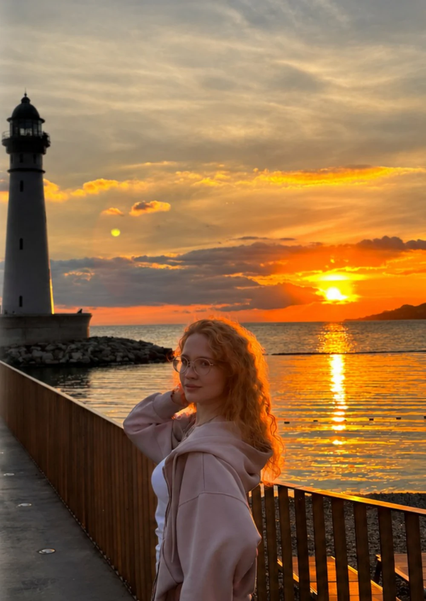

Прибайкальский парк
Визуальная система, в которой встречаются природа, культура и современный дизайн
Веб-дизайн · Айдентика · Визуальные системы
Создаю ясные интерфейсы и образы,
которые хочется запомнить

01 / Избранные работы
Сайты, бренды и цифровые продукты.
Разные задачи — целостный визуальный подход

Визуальная система, в которой встречаются природа, культура и современный дизайн

Архитектурный силуэт, бордовый цвет и сдержанная торжественность

Цифровое пространство для культурной жизни исторической усадьбы

Сайт ресторана с характером эпохи и вниманием к деталям

Персональный сайт как продолжение характера автора

Галерея искусства, авторы и личная коллекция избранного

Эстетика и смысл в визуальном языке студии веб-дизайна

Тёплый образ бренда травяного чая и бережных традиций
02 / Обо мне
Я Любовь Чайка, веб-дизайнер
с художественным бэкграундом
Работаю с композицией, цветом и типографикой. Создаю интерфейсы и цельные визуальные системы, соединяя художественный подход с логикой веба.
Для меня важны ясность, удобство и визуальная гармония. Мне нравится находить характер проекта и выражать его в деталях — от шрифта до общего ритма страницы.
РГУ им. А. Н. Косыгина
Технологии. Дизайн. Искусство

03 / Инструменты и навыки
Инструменты, с которыми я работаю
в дизайне, 3D и вебе
04 / Давайте познакомимся
Есть идея или задача?
Расскажите о ней — обсудим проект